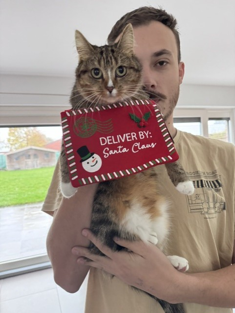
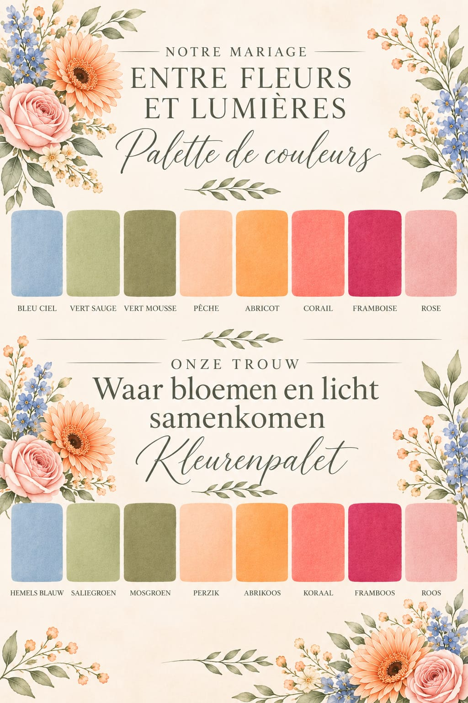
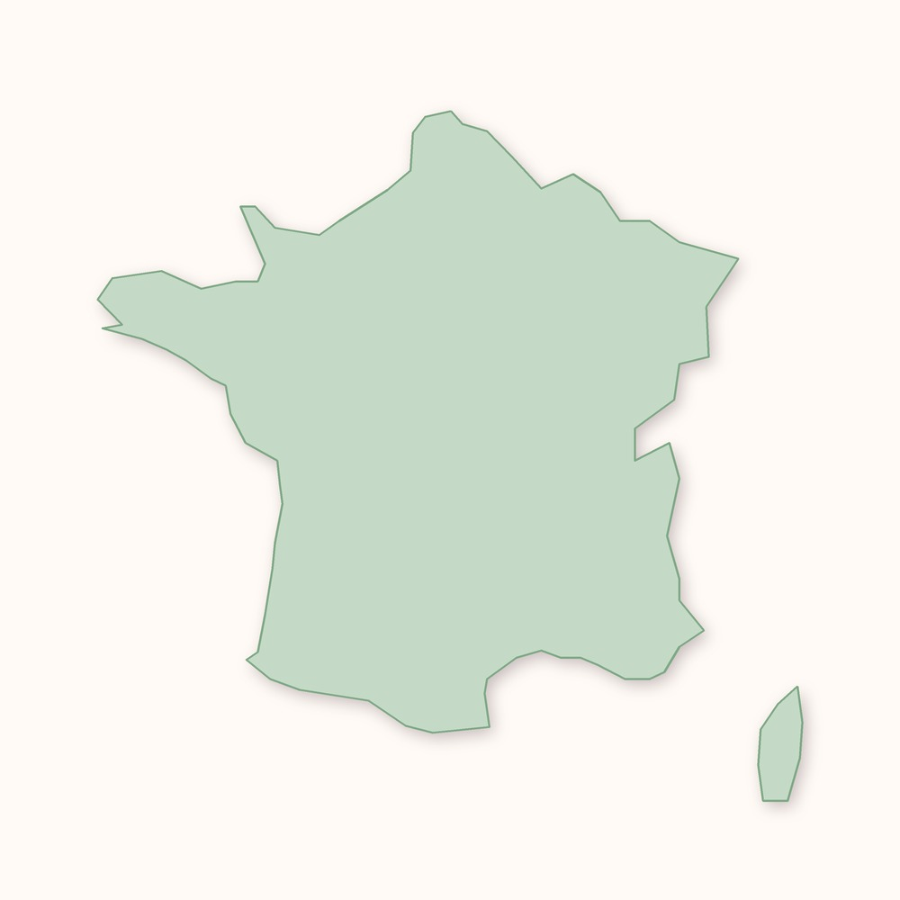

📁 Chapitre 2
Les préparatifs continuent...
Dossier d'enquête n°2
Quelques réponses.
Quelques avancées.
Beaucoup de mystères.
🌸 Bienvenue dans la suite de l'aventure
Bien joué !
Vous avez trouvé la seconde partie du site.
Ici, nous partagerons avec vous les dernières nouvelles de l'organisation, quelques moments des préparatifs, plusieurs réponses aux questions qui nous sont régulièrement posées… et bien sûr quelques nouveaux indices pour les enquêteurs les plus motivés.
Nous souhaitons également remercier toutes les personnes qui ont déjà répondu à leur invitation. Votre enthousiasme nous fait énormément plaisir et nous aide beaucoup dans l'organisation de ce week-end.
Pour ceux qui n'auraient pas encore répondu, aucun stress : vous avez toujours jusqu'au 31 décembre. Mais si vous connaissez déjà votre disponibilité, n'hésitez pas à nous le faire savoir afin que nous puissions avancer sur d'autres éléments.
✅ Non, nous n'irons pas nous marier en Chine.
✅ Oui, tous les repas du jeudi soir au dimanche midi sont inclus.
✅ Non, le prix ne diminue pas si Mamie Bigou décide de sauter le dessert.
Goed gedaan!
Jullie hebben het tweede deel van onze website gevonden.
Hier delen we graag nieuws over de voorbereidingen, enkele leuke momenten achter de schermen, antwoorden op veelgestelde vragen en natuurlijk ook nieuwe aanwijzingen voor de meest gemotiveerde speurders.
We willen ook iedereen bedanken die al gereageerd heeft op de uitnodiging.
Voor wie nog niet geantwoord heeft: geen paniek, jullie hebben nog tijd tot 31 december.
✅ Nee, we trouwen niet in China.
✅ Ja, alle maaltijden van donderdagavond tot zondagmiddag zijn inbegrepen.
✅ Nee Annelien, je hoeft geen chips mee te brengen, Florian zal er voldoende voorzien hebben.
📬 Toutes les invitations ont été envoyées
Ça y est !
Tous nos invités ont désormais reçu leur invitation officielle.
L'aventure est officiellement lancée pour tout le monde et les préparatifs continuent d'avancer à grands pas.
📸 Les préparatifs avancent

Ces dernières semaines ont été riches en avancées.
Nous avons désormais validé :
✅ La salle du mariage
✅ Le repas
✅ Le photographe
Une autre étape importante vient également d'être franchie : nos alliances ont été choisies et sont actuellement en production.
Nous allons également prochainement commencer les essayages avec nos témoins.
Plus le temps passe, plus le grand jour se rapproche… et plus le stress commence doucement à monter !
🐱 Communiqué officiel de Lexy

Après étude attentive de son invitation, Lexy a décidé de ne pas participer aux festivités.
Motif invoqué :
Si je ne suis pas le centre de l'attention pendant tout le week-end, je préfère décliner.
La direction regrette cette décision mais respecte son choix.
Na grondig overleg heeft Lexy beslist niet aanwezig te zijn.
Als ik niet het middelpunt van de aandacht ben tijdens het hele weekend, blijf ik liever thuis.
🎨 Les couleurs du samedi

Plusieurs personnes nous ont demandé quelles couleurs nous avions imaginées pour l'ambiance du samedi.
Cette palette est simplement là comme source d'inspiration.
Il ne s'agit absolument pas d'une obligation.
Le plus important reste que chacun se sente bien dans sa tenue.
🎵 Musique du moment
Sunny - Bobby Hebb
Parce que chaque période des préparatifs mérite sa propre bande-son.
🔎 Nouvelles pièces du dossier
Devant les nombreuses demandes des enquêteurs, nous avons accepté de dévoiler quelques nouveaux éléments.
Nous ne garantissons cependant pas qu'ils vous aideront réellement...



Nombre de personnes ayant trouvé le lieu exact : nous ne confirmerons rien.
Nombre de personnes persuadées d'avoir trouvé : beaucoup plus.
🌼 Conclusion
Si vous êtes arrivés jusqu'ici, c'est probablement que vous faites partie des invités les plus curieux.
Le dossier continue de s'étoffer.
Les alliances sont en fabrication.
Les essayages approchent.
Les préparatifs avancent.
Et malgré toutes vos théories, le mystère demeure encore entier.
Rendez-vous dans quelques semaines pour le prochain chapitre...
Avec peut-être de nouveaux indices.
Ou peut-être simplement de nouvelles fausses pistes.
😉